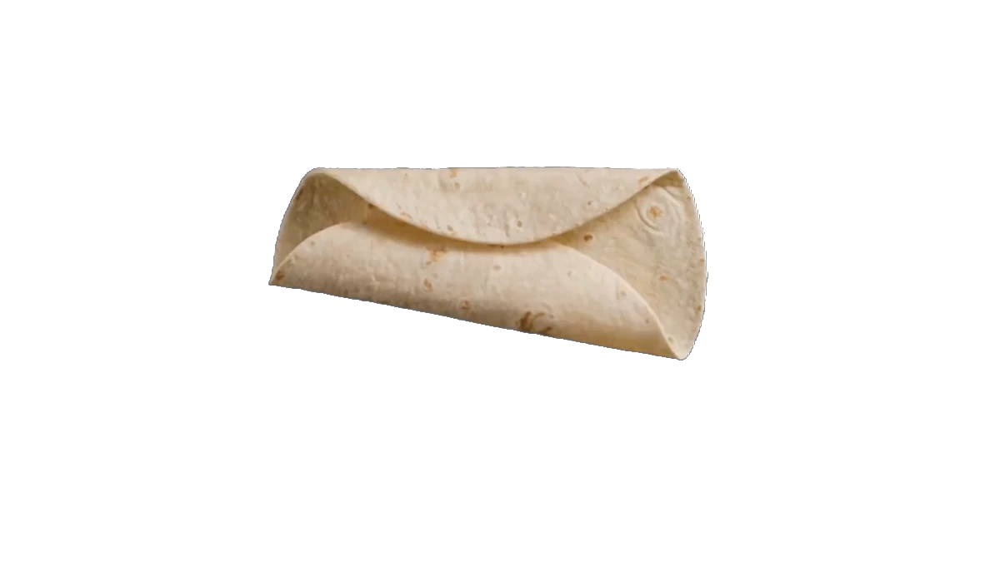
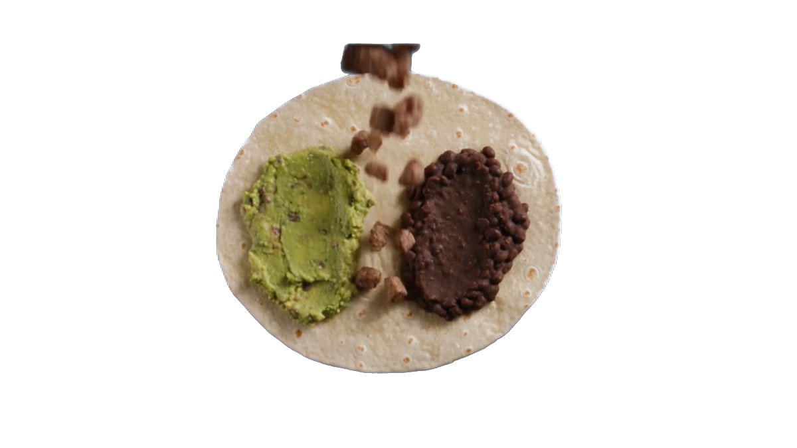
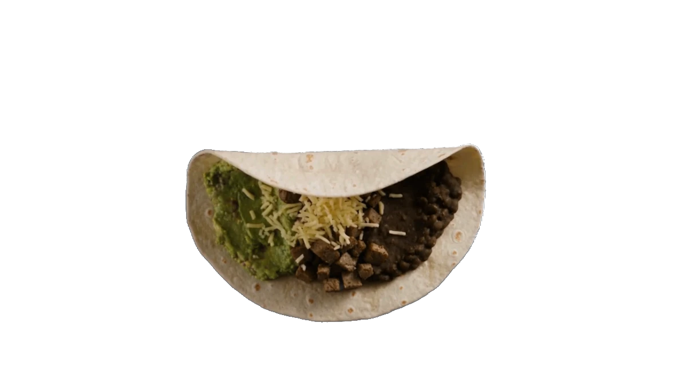

Cadena: scale=1200px → colorkey=0xDD9EEF:0.10:0.03 → format=rgba
(ffmpeg), luego despill en Python/numpy: donde (R+B)/2 > G,
baja R y B hacia G — conserva el píxel y su suavizado, solo le quita el
tinte. Puesto sobre el fondo EXACTO del hero (.tk-hero +
.tk-hero-fondo-velo de style.css, copiado literal).
⚠️ El despill se intentó primero con el filtro geq de ffmpeg
(única forma de hacerlo a mano, ya que su filtro despill nativo
solo soporta verde/azul). Encontré un bug real ahí: con la MISMA fórmula y
el MISMO frame decodificado una sola vez (verificado con split
para descartar variación entre tomas), geq devolvía valores que
no seguían la resta — hasta un canal que subía en vez de bajar, y un canal
G que debía quedarse intacto y cambiaba solo. Se movió el despill a
Python/numpy sobre el PNG sin comprimir que entrega el colorkey, donde la
aritmética sí se pudo verificar píxel por píxel contra la fórmula. Erosion
del alfa (paso 2) no hizo falta — el despill solo ya dejó los 3 bordes
limpios, incluida la zona oscura de frame_0133 donde el geq
roto había dejado motas azules.

Zoom al borde superior (real, 2.86×)
Zoom al borde derecho (real, 4×)
Zoom al borde + sombra oscura (real, 4×)